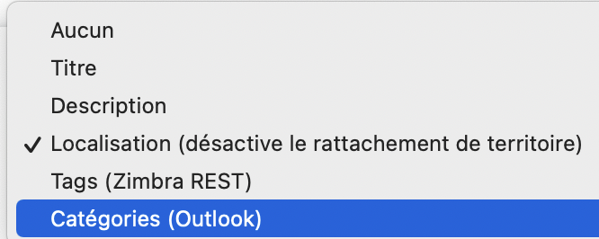
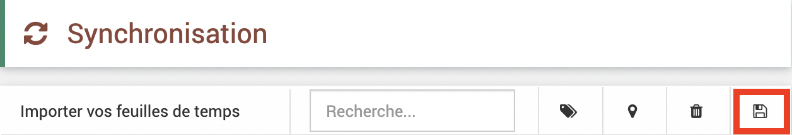
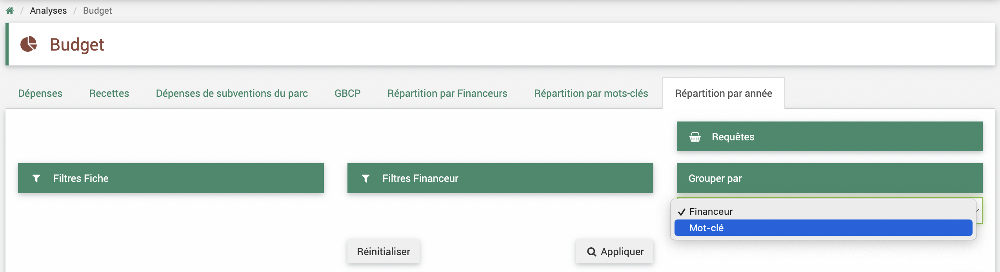

Développements 2024 04
Contexte
Un déploiement des derniers développements sur le logiciel EVA a lieu le 6/04/2024. Il comprend la mise à jour du code EVA, des résolutions d’anomalies et des nouvelles fonctionnalités pour les indicateurs.
Les développements sont détaillés ci-après, avec le détail du ticket GitLab associé et un mode d’emploi pour les nouveautés.
Dette technique
Depuis quelques temps, nous vous parlons de la “dette technique” du logiciel EVA qui réfère au besoin de mise à jour des technologies sous-jacentes du logiciel afin de maintenir sa sécurité et ses performances.
Après l’aval des comités stratégiques et techniques EVA, une première partie de mise à jour a déjà commencé. Deux phases de test ont déjà eu lieu sur une version test du logiciel et je remercie les parcs volontaires pour leurs vérifications approfondies.
Cette mise à jour ne devrait entraîner aucune modification sur votre EVA actuel (en terme de fonctionnement et de visuel et les données ne sont pas touchées), seuls des effets peuvent être attendus sur les exports Word et les territoires. Pour les exports, Word il faudra faire attention aux « balises html » issus de copier/coller des sites web dans les textes. Pour les territoires, la nouvelle version va générer une erreur s’il y a des fichiers de territoires trop conséquents, votre liste de territoire ne s’affichera pas, l’assistance pourra résoudre ce problème.
N’hésitez pas à solliciter l’assistance via le tchat ou les tickets GitLab si vous constatez des problèmes
Nouvelles fonctionnalités indicateurs
Depuis quelques temps, nous travaillons avec un groupe de travail dédié composé de référents EVA et avec le prestataire à faire évoluer ce module pour qu’ils répondent mieux à vos besoins. Une première partie des développements a pu avoir lieu et être testée et sera donc livrée en même temps que la mise à jour. Ces nouvelles fonctionnalités inclues : - groupement des indicateurs en « groupe » - création de campagne de recueil des donnnées pour associer une date de saisie attendue et un référent par indicateur - import des mesures d’indicateur - association de pièce-jointes aux mesures
La deuxième partie du développement du module indicateurs se concentrera sur les analyses possibles via ces nouvelles fonctionnalités.
Quelques dysfonctionnement sur ce développement persistent à ce jour (04/04/2024) mais seront corrigés très prochainement.
N’hésitez pas à me faire remonter toutes remarques ou anomalies sur ces nouvelles fonctionnalités indicateurs par mail lroumazeilles@parcs-naturels-regionaux.fr
Anomalies résolues
1. Problèmes de synchronisation des agendas
Ticket 546 Suite à une évolution outlook, les catégories ne sont plus reconnues dans EVA, cette option n’est donc plus nécessaire et peut porter à confusion, elle a donc été supprimée dans les choix possibles lors du paramétrage des synchronisations.
{kind=link}
Ticket 564 Il y avait un problème de prise en compte du contenu html dans la description des rendez-vous qui bloquaient donc la synchronisation.
Corrigé
Ticket 565 Il y avait un problème de remontée des mots-clés et territoires avec la synchronisation automatique.
Corrigé
Ticket 566 Une double synchronisation pouvait avoir lieu au moment de la synchronisation manuelle si on cliquait deux fois sur le bouton enregistrer. L’interface a été corrigée pour ne plus permettre ce double-clic.
Corrigé
{kind=link}
2. Problème de saisie des temps hebdo en jours
Ticket 577 Dans la saisie des temps hebdomadaires, on peut saisir les temps par heures ou par jour. Si l’on souhaite les saisir par jour, il faut avoir paramétré combien d’heures représente une journée dans les paramétrages temps. Par exemple : on peut paramétrer qu’une journée représente 7,61 heures et ainsi lors de la saisie hebdomaire on peut simplement indiquer 1 pour une journée et 0,5 pour une demi journée et le logiciel fera le calcul en heure. Cette fonctionnalité était en fait deffectueuse jusqu’à présent si le nombre d’heure par jour contenait une décimal, le logiciel faisait un mauvais calcul mais l’affichage restait le bon.
Avertissement
Ceci a été corrigé mais il se peut que certains de vos anciens temps ajoutés avant la correction ait pu être mal interprété par le logiciel dans ce cas vous vous retrouver avec un nombre d’heure bien plus conséquent que prévu.
A VERIFIER POUR CEUX QUI UTILISAIENT CETTE FONCTIONNALITE
3. Saisie des mouvements à la chaîne
Ticket 406 : Lorsque l’on créait plusieurs dépenses ou recettes dans les fiches à la suite, il y avait un problème de sauvegarde sur la date. En effet, par défaut la date renseignée se remplissait avec la date renseignée dans la dépense ou recette précédemment créé et indiquait une erreur de non remplissage.
Corrigé
4. Nomenclatures et colonnes financières adaptées
Ticket 487 : Le précédent déploiement avait permis l’affichage des soldes financiers en vue liste des fiches mais cela avait conduit a un mélange des nomenclatures comptables entre les différents types des parcs (utilisant une nomcenclature AE/CP ou non).
Corrigé
5. Analyses budget par année et mots-clés
Ticket 504 : Dans le module des analyses budget, dans l’onglet répartition par année, le regroupement par mots-clés ou par financeurs ne fonctionnait pas correctement.
Corrigé
{kind=link}
6. Filtre structures pour indicateurs réseau
Ticket 488 : Dans l’instance réseau des PNx, il existe un filtre « structure » qui indique à quel parc correspond la mesure. Dans le module indicateurs -> mesures, le filtre « structure » ne fonctionnait plus.
Corrigé
Fonctionnalités indicateurs
N’hésitez pas à me faire remonter toutes remarques ou anomalies sur ces nouvelles fonctionnalités indicateurs par mail lroumazeilles@parcs-naturels-regionaux.fr
Nouvelles fonctionnalités livrées : - possibilité d’ajouter des pièces-jointes aux mesures d’indicateurs - possibilité de créer des groupes d’indicateurs - possibilité de créer des campagnes de récoles des mesures d’indicateur - possibilité de créer des alertes d’indicateurs - possibilité d’importer les mesures d’indicateurs -> Documentation à retrouver dans la documentation sur le module indicateur et les imports
À venir : - résolution de petites anomalies inhérantes aux nouvelles fonctionnalités - ajout de possibilité d’analyses et d’agrégation